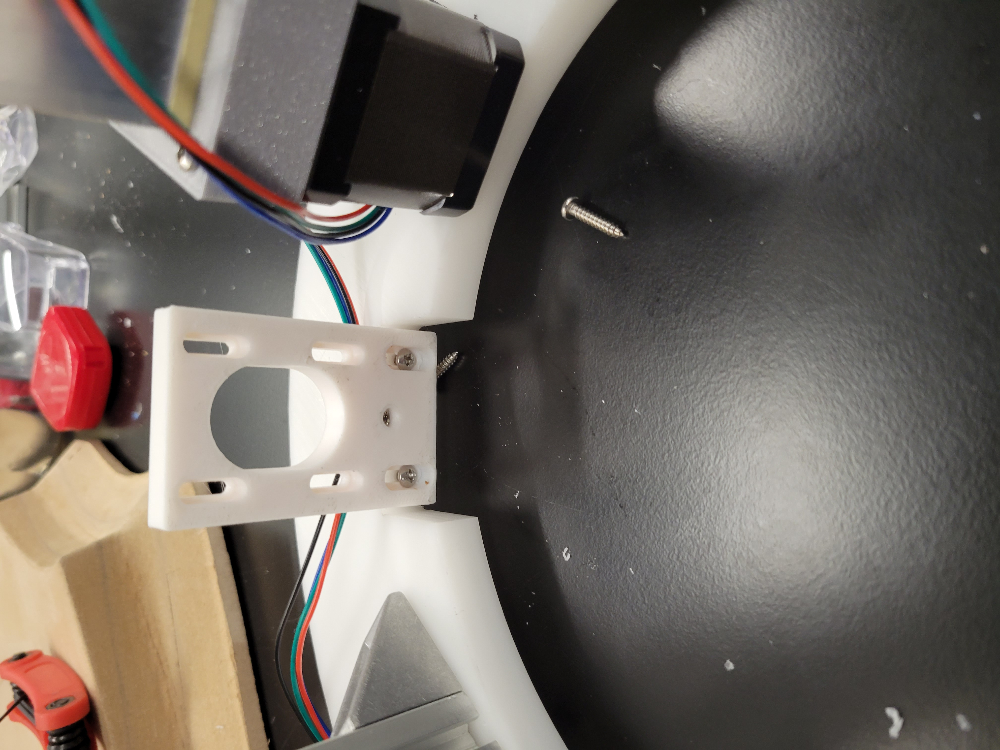
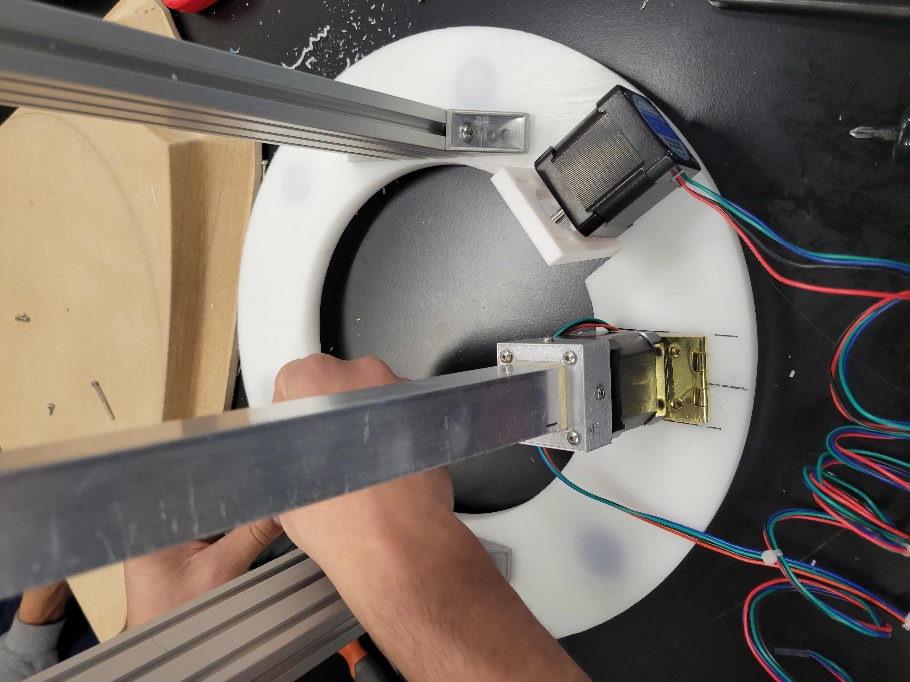
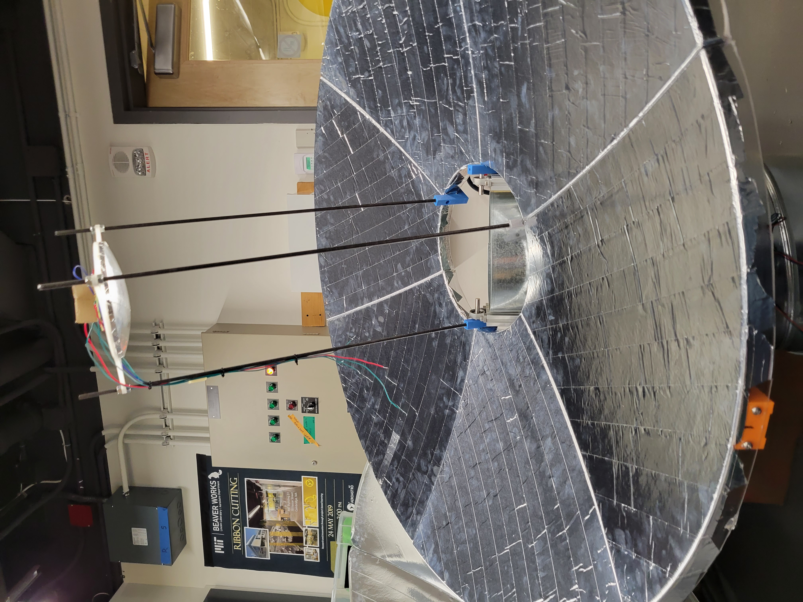
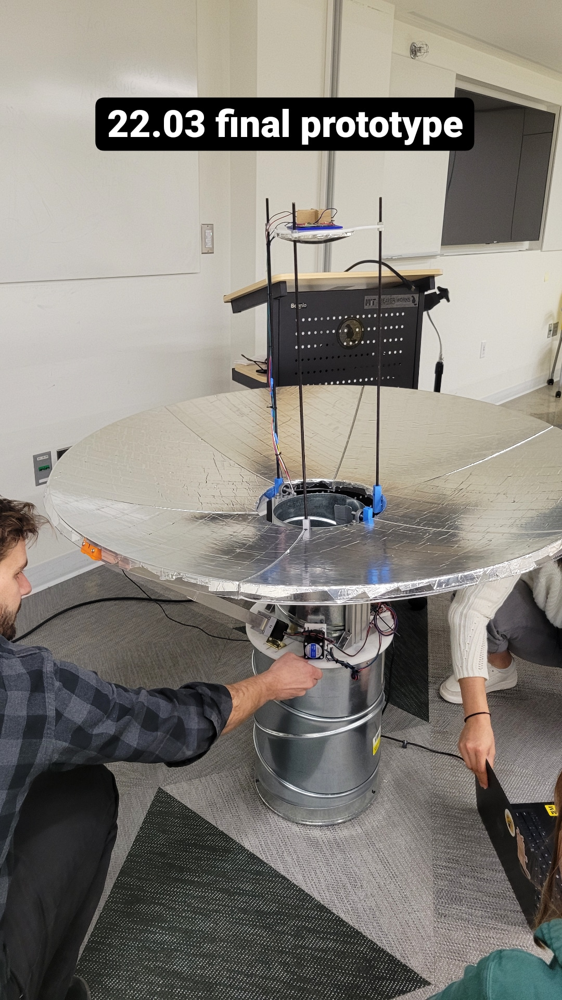

## Week 14 (Last Week!!)
### Monday-Dec 12
Today was the last stretch! I started off the day by screwing Nathan's custom-made motor brackets to the upper platform. Then, I helped out wherever I could in order to assemble everything together. The final personal milestone for the work that I was focusing on came with the wooden gear that Nathan and I decided would have 70 teeth with 1.5 degrees of separation, and we saw this worked via trial and error with another cardboard laser cut one that we made. Messing around with Rhino and the laser cutting software was quite fun, but at last, our hard work paid off!! Below are some pictures that I took today.



<video width="500px" height="500px"
controls="controls"/>
<source src="laser.mp4"
type="video/mp4">
</video>
### Wednesday-Dec 14
Starting this session off, I worked on the presentation, and finally, we presented our final prototype! I had a lot of fun this semester, especially this last month with things, and though I am not the best at expressing that, I did appreciate this experience a lot and have recommended it to some of my friends that enjoy the design process.
